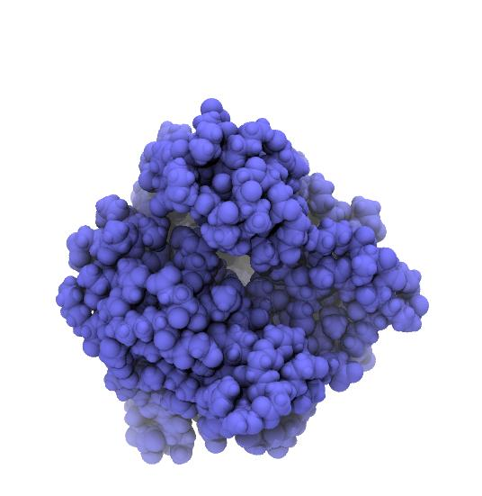
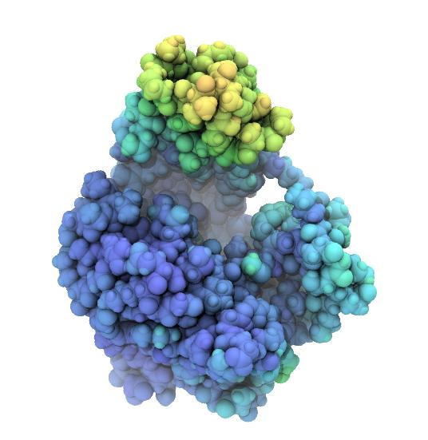

MDAnalysis also supports writing of data in a range of file formats (see the Table of supported coordinate formats for details). MDAnalysis supports both single frame writers (such as a simple PDB or GRO file) and trajectory writers (e.g. XTC, DCD, but also multi-frame PDB files).
The most straightforward way to write to a file that can only hold a single frame is to use the write() method of any AtomGroup as already also shown under Processing AtomGroups. For instance, to only write out the protein without solvent to a file in GRO format:
u = MDAnalysis.Universe(PDB)
protein = u.select_atoms("protein")
protein.write("protein.gro")
MDAnalysis uses the file suffix to determine the output file format (unless the format keyword is specified) and will raise an exception if it is not suitable for single frame writing.
The typical use pattern is to
In practice, the second step is typically repeated in a loop as in the example below:
import MDAnalysis
from MDAnalysis.tests.datafiles import PDB, XTC
u = MDAnalysis.Universe(PDB, XTC)
protein = u.select_atoms("protein")
with MDAnalysis.Writer("protein.xtc", protein.n_atoms) as W:
for ts in u.trajectory:
W.write(protein)
The loop steps through the input trajectory frame by frame. The coordinates of the selection (the AtomGroup protein) change accordingly and are then written as a new frame into the output trajectory.
The output trajectory only contains the coordinates of the protein. For this trajectory to be useful, a protein-only topology file also has to be stored, as in the example under Single frames.
It is often very useful to project per-atom properties on the structure. A common approach is to save scalar values in the B-factor field of a PDB file and then color atoms by B-factor (also known as temperature factor or just “beta”).
The following example computes the shift of each atom in AdK relative to a reference structure (line 23). We take as reference the closed conformation (after a structural superposition on the CORE domain with alignto()). The shifts are written into the B-factor with the set_bfactor() method of AtomGroup. Each frame is written out as part of a multi-frame PDB file:
1 2 3 4 5 6 7 8 9 10 11 12 13 14 15 16 17 18 19 20 21 22 23 24 25 26 27 28 29 30 | # project a dynamic property on the structure using the B-factor field
import numpy as np
import MDAnalysis
import MDAnalysis.analysis.align
from MDAnalysis.tests.datafiles import PSF, DCD
u = MDAnalysis.Universe(PSF, DCD)
ref = MDAnalysis.Universe(PSF, DCD) # copy of u
CORE_selection = "resid 1:29 or resid 60:121 or resid 160:214"
pdbtrj = "adk_distance_bfac.pdb"
with MDAnalysis.Writer(pdbtrj, multiframe=True, bonds=False, n_atoms=u.atoms.n_atoms) as PDB:
# reference coordinates: set to first frame
ref.trajectory[0]
# iterate through our trajectory
for ts in u.trajectory:
# superimpose on the reference CORE (at t=0)
rmsd = MDAnalysis.analysis.align.alignto(u.atoms, ref.atoms, select=CORE_selection)
distances = np.sqrt(np.sum((u.atoms.positions - ref.atoms.positions)**2, axis=1))
# project displacement on structure via bfactor field
u.atoms.set_bfactors(distances)
PDB.write(u.atoms)
print("Frame {0}: CORE RMSD before/after superposition: {1[0]:.1f} / {1[1]:.1f} A. "
"min-max displacement: {2:.1f}...{3:.1f} A".format(ts.frame, rmsd, distances.min(), distances.max()))
print("Wrote PDB trajectory {0} with distances in bfactor field".format(pdbtrj))
|
To visualize in VMD, use the pdbbfactor Tcl script below on the VMD Tcl commandline:
source pdbbfactor.tcl
pdbbfactor adk_distance_bfac.pdb
Rendered snapshots from the beginning, middle, and end of the trajectroy are shown below. Note that the tip of the LID domain moves by almost 25 Å, which provides some justification for calling the AdK closed/open transition a “large conformational change” [Seyler2014].
|  |  | 
|
|---|---|---|
| AdK closed conformation. | AdK intermediate conformation, atoms colored by displacement from the closed conformation. Color scale ranges from 0 Å (blue) to 25 Å (red). | AdK open conformation, atoms colored by displacement from the closed conformation. Color scale ranges from 0 Å (blue) to 25 Å (red). |
pdbbfactor Tcl script
pdbbfactor was originally written by Justin Gullingsrud (2004) and slightly modified for this tutorial:
1 2 3 4 5 6 7 8 9 10 11 12 13 14 15 16 17 18 19 20 21 22 23 24 25 26 27 28 29 30 31 32 | # load multi-frame pdb file, storing B factors from each frame in user.
# usage: pdbbfactor <filename>
# url: http://www.ks.uiuc.edu/Research/vmd/script_library/scripts/pdbbfactor/
#
# Justin Gullingsrud
# 3 September 2004
#
# Oliver Beckstein, 2014-10-30
# updated for use with standard multipdb files which use ENDMDL as separators
# (END --> ENDM)
proc pdbbfactor { fname } {
mol new $fname waitfor all
set all [atomselect top all]
set frame 0
set in [open $fname r]
set beta {}
while { [gets $in line] != -1 } {
switch -- [string range $line 0 3] {
ENDM {
$all frame $frame
$all set user $beta
set beta {}
incr frame
}
ATOM -
HETA {
lappend beta [string range $line 61 66]
}
}
}
}
|
Note
We could have also directly loaded the scalar data into the User field in VMD; this is demonstrated in vmduser.py.
{kind=link}
{kind=link}